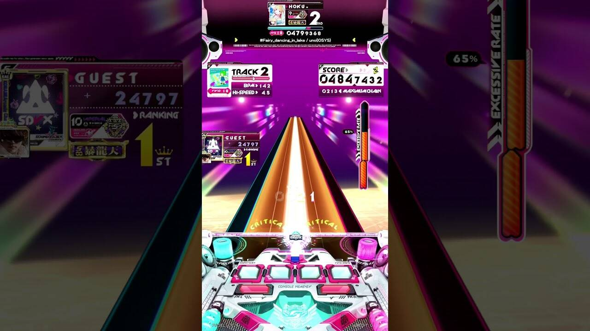
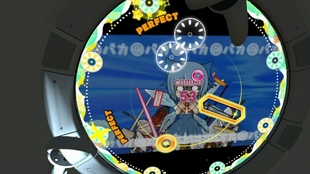
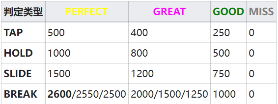

街机端音游
街机是指电子游乐场营业用的游戏机，而当中用以游玩音游这种游戏类型的游戏机，既是所谓的街机端音游。操作方式与街机框体及游玩方式等密切相关：街机音乐游戏通常会设置按钮、旋钮、摇杆、垫板与触摸屏等输入设备供玩家输入指令完成操作，而如今更是有红外、动捕这类科技丰富玩家的体验。要说起电子游乐场最为常见的街机端音游，那就是太鼓达人了。除此之外还有MaiMaiDX，Sound
Voltex等也是较为知名的。
以下是几个知名的街机端音游介绍。

SOUND
VOLTEX是BEMANI于2012年1月18日开始运营的音乐游戏，略称为SDVX。游戏为下落式，控制器包含6个按键（4个白色BT与两个橙色FX）及左右2个旋钮。玩家通过按照游戏提示在正确的时间按动、按住按键或者旋转旋钮进行游戏。游戏的按键音是其特色，和传统下落式正确按下奏音不同，本游戏正确按下的话会产生DJ台式的电子特效声，犹如现场对原歌曲进行Remix。
游戏的收录曲也是其特征，收录的V家曲和东方曲总和与原创曲相近。游戏常态通过SOUND VOLTEX
FLOOR网站进行原创曲目募集，募集内容包括完全原创曲、KONAMI音乐Remix、原创V家曲、东方曲Remix等。
此外，KONAMI还推出了PC端的SOUND VOLTEX III GRAVITY WARS，需要KONAMI ID，拥有两种收费方式：
REGULAR，也就是正常街机计费方式，根据模式不同，需要不同量特殊的游玩券（课金购买）。
收录前三代约750曲（持续更新中），有少量独占曲（但日后可能移植至街机平台）。另有3首BEMANI×pixivイラストコンテスト活动曲在此版本与四代机同时配信。自2019年8月1日起更新四代曲。2020年4月28日配信收录于五代的96首曲目。可与街机数据联动，任何一方已解锁的曲子/使用Pc抽到的头像都可共通,可以比官机提前玩到一些新曲。
INFINITE，也就是月卡无限畅玩模式，价格为2,138日元/月，但无法与街机数据联动，无法获得Pc/Blc，无法进入ib解禁特殊难度，有诸多限制。

maimai是由SEGA开发的一款街机音乐游戏。它是一款下落式音乐游戏。maimai的框体形似洗衣机，操作主体为一个圆形的触摸屏幕，加上外围的一圈（8个）实体按键，从正上方右侧键开始按顺时针分别被编号为1-8号键；在机台上部亦有一个方形屏幕用来显示当前游玩情况。玩家需要在从屏幕中央飞出的音符到达外圈时，按下实体按键或点击触屏的对应位置，或在屏幕上出现滑条时，在指定时间内沿屏幕所示的方向滑动。DX新框体中增加的Touch
Note，则需要在音符标志收拢的瞬间点击或按住屏幕上的指定位置。
note分为TAP，HOLD，SLIDE，BREAK。
TAP：即单点。一般的单点呈粉色圆圈，在音符与外圈判定线重合时轻按对应轨道的按键或触摸对应位置的屏幕，计1COMBO。
HOLD：即长押。一般的长押呈粉色六边形，需在音符与判定线重合时按下对应按键或屏幕，音符结尾到达判定线时松开，首尾各计1COMBO。
在旧框体中HOLD存在尾判，HOLD松手过晚会导致失误判定。DX新框体取消了HOLD的尾判，松手过晚不再导致失误判定，也可以提前松手，但在音符结束前松手过早仍然会导致失误判定。
SLIDE：玩家需先在星星TAP与判定线重合时击打对应位置的按钮或屏幕，间隔一拍后沿着滑条指示的方向进行滑动。此种音符，星星计一个TAP，滑条计一个SLIDE，各1COMBO。
PiNK版本起还有一种扇形SLIDE，按下星星后滑条向对面的三个音符位置扩散。此类SLIDE的判定和通常SLIDE无别。
BREAK：，是一种特殊的TAP音符。从GreeN
PLUS开始，此类音符拥有了加分效果，且即使在PERFECT判定区内也有更加细分的判定，击打位置越精确，分数越高，但如果一旦出现GREAT及以下的判定，那么丢失的完成率会比一般TAP更高。
游戏中单音符的判定有4种：PERFECT、GREAT、GOOD、MISS.
